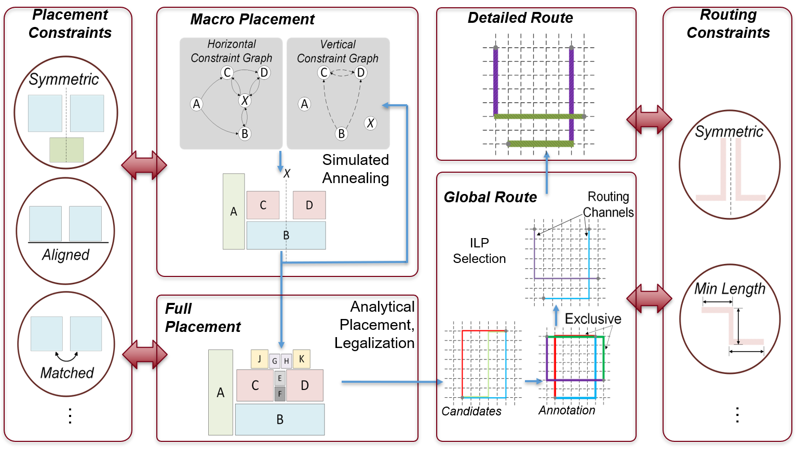

Constraints¶
Analog designers uses constraints to achieve best performance from a layout.
The ALIGN flow identifies symmetries and array structures in the design and generate layout constraints automatically but designers can add their own constraint for better control.
Here, are the list of constraints used in align. These constraints are applied on the instances (instances of NMOS/PMOS/Resistor/Capacitor/Subcircuit) or on nets.
These constraints need to be defined seperately for each of the hierachies with name <hier name>.const.json, defined in the schematic.
Constraint options¶
List of options available for users.
SymmetricBlocks¶
-
class
align.schema.constraint.SymmetricBlocks(*args, constraint: str, pairs: align.schema.constraint.List[List[str]], direction: Literal[H, V])[source] Defines a symmetry constraint between single and/or pairs of blocks.
- Parameters
Example:
{ "constraint" : "SymmetricBlocks", "pairs" : [["MN0","MN1"], ["MN2","MN3"], ["MN4"]], "direction" : "V" }
Order¶
-
class
align.schema.constraint.Order(*args, constraint: str, instances: align.schema.model.List[str], direction: Literal[horizontal, vertical, left_to_right, right_to_left, bottom_to_top, top_to_bottom] = None, abut: bool = False)[source] Defines a placement order for instances in a subcircuit.
- Parameters
direction (str, optional) –
The following options for direction are supported
'horizontal', placement order is left to right or vice-versa.'vertical', placement order is bottom to top or vice-versa.'left_to_right', placement order is left to right.'right_to_left', placement order is right to left.'bottom_to_top', placement order is bottom to top.'top_to_bottom', placement order is top to bottom.None: default ('horizontal'or'vertical')abut (bool, optional) – If abut is true adjoining instances will touch
WARNING: Order does not imply aligment / overlap of any sort (See Align)
Example:
{"constraint":"Order", "instances": ['MN0', 'MN1', 'MN2'], "direction": "left_to_right"}
Align¶
-
class
align.schema.constraint.Align(*args, constraint: str, instances: align.schema.model.List[str], line: Literal[h_any, h_top, h_bottom, h_center, v_any, v_left, v_right, v_center] = None)[source] Instances will be aligned along line. Could be strict or relaxed depending on value of line
- Parameters
line (str, optional) –
The following line values are currently supported:
h_any, align instance’s top, bottom or anything in between.'v_any', align instance’s left, right or anything in between.'h_top', align instance’s horizontally based on top.'h_bottom', align instance’s horizomtally based on bottom.'h_center', align instance’s horizontally based on center.'v_left', align instance’s vertically based on left.'v_right', align instance’s vertically based on right.'v_center', align instance’s vertically based on center.None:default ('h_any'or'v_any').

WARNING: Align does not imply ordering of any sort (See Order)
Example:
{"constraint":"Align", "instances": ['MN0', 'MN1', 'MN2'], "line": "v_center"}
Enclose¶
-
class
align.schema.constraint.Enclose(*args, constraint: str, instances: align.schema.model.List[str] = None, min_height: int = None, max_height: int = None, min_width: int = None, max_width: int = None, min_aspect_ratio: float = None, max_aspect_ratio: float = None)[source] Enclose instances within a flexible bounding box with min_ & max_ bounds
- Parameters
min_height (int, optional) – assign minimum height to the subcircuit
max_height (int, optional) – assign maximum height to the subcircuit
min_width (int, optional) – assign minimum width to the subcircuit
max_width (int, optional) – assign maximum width to the subcircuit
min_aspect_ratio (float, optional) – assign minimum aspect ratio to the subcircuit
max_aspect_ratio (float, optional) – assign maximum aspect ratio to the subcircuit
Note: Specifying any one of the following variables makes it a valid constraint but you may wish to specify more than one for practical purposes
Example:
{"constraint":"Enclose", "instances": ['MN0', 'MN1', 'MN2'], "min_aspect_ratio": 0.1, "max_aspect_ratio": 10 }
Spread¶
-
class
align.schema.constraint.Spread(*args, constraint: str, instances: align.schema.model.List[str], direction: Literal[horizontal, vertical] = None, distance: int)[source] Spread instances by forcing minimum spacing along direction if two instances overlap in other direction
- Parameters
WARNING: This constraint checks for overlap but doesn’t enforce it (See Align)
Example:
{ "constraint": "Spread", "instances": ['MN0', 'MN1', 'MN2'], "direction": horizontal, "distance": 100 }
AspectRatio¶
-
class
align.schema.constraint.AspectRatio(*args, constraint: str, subcircuit: str, ratio_low: float = 0.1, ratio_high: float = 10, weight: int = 1)[source] Define lower and upper bounds on aspect ratio (=width/height) of a subcircuit
ratio_low <= width/height <= ratio_high
- Parameters
Example:
{"constraint": "AspectRatio", "ratio_low": 0.1, "ratio_high": 10, "weight": 1 }
Boundary¶
AlignInOrder¶
-
class
align.schema.constraint.AlignInOrder(*args, constraint: str, instances: align.schema.model.List[str], line: Literal[top, bottom, left, right, center] = 'bottom', direction: Literal[horizontal, vertical] = None, abut: bool = False)[source] Align instances on line ordered along direction
- Parameters
line (str, optional) –
The following line values are currently supported:
'top', align instance’s horizontally based on top.'bottom', align instance’s horizomtally based on bottom.'center', align instance’s horizontally based on center.'left', align instance’s vertically based on left.'right', align instance’s vertically based on right.direction –
The following direction values are supported:
- obj
’horizontal’, left to right
- obj
’vertical’, bottom to top
Example:
{ "constraint":"Align", "instances": ["MN0", "MN1", "MN3"], "line": "center", "direction": "horizontal" }
Note: This is a user-convenience constraint. Same effect can be realized using Order & Align
CompactPlacement¶
-
class
align.schema.constraint.CompactPlacement(*args, constraint: str, style: Literal[left, right, center] = 'left')[source] Defines snapping position of placement for all blocks in design.
- Parameters
style (str) –
Following options are available.
'left', Moves all instances towards left during post-processing of placement.'right', Moves all instances towards right during post-processing of placement.'center', Moves all instances towards center during post-processing of placement.
Example:
{"constraint": "CompactPlacement", "style": "center"}
SameTemplate¶
CreateAlias¶
-
class
align.schema.constraint.CreateAlias(*args, constraint: str, instances: align.schema.model.List[str], name: str)[source] Creates an alias for list of instances. You can use this alias later while defining constraints
Example:
{ "constraint":"CreateAlias", "instances": ["MN0", "MN1", "MN3"], "name": "alias1" }
GroupBlocks¶
-
class
align.schema.constraint.GroupBlocks(*args, constraint: str, name: str, instances: align.schema.model.List[str], generator: dict = None)[source] Forces a hierarchy creation for group of instances. This brings the instances closer. This reduces the problem statement for placer thus providing better solutions.
- Parameters
Example:
{ "constraint":"GroupBlocks", "name": "group1", "instances": ["MN0", "MN1", "MN3"] "generator": {name: 'MOS', 'parameters': { "pattern": "cc", } } }
DoNotIdentify¶
BlockDistance¶
-
class
align.schema.constraint.BlockDistance(*args, constraint: str, abs_distance: int)[source] TODO: Replace with Spread
Places the instances with a fixed gap. Also used in situations when routing is congested.
- Parameters
abs_distance (int) – Distance between two blocks. The number should be multiple of pitch of lowest horizontal and vertical routing layer i.e., M2 and M1
Example:
{ "constraint" : "BlockDistance", "abs_distance" : 420 }
HorizontalDistance¶
-
class
align.schema.constraint.HorizontalDistance(*args, constraint: str, abs_distance: int)[source] TODO: Replace with Spread
Places the instances with a fixed horizontal gap. Also used in situations when routing is congested.
- Parameters
abs_distance (int) – Distance between two blocks. The number should be multiple of pitch of lowest vertical routing layer i.e., M1
Example:
{ "constraint" : "HorizontalDistance", "abs_distance" : 80 }
VerticalDistance¶
-
class
align.schema.constraint.VerticalDistance(*args, constraint: str, abs_distance: int)[source] TODO: Replace with Spread
Places the instances with a fixed vertical gap. Also used in situations when routing is congested.
- Parameters
abs_distance (int) – Distance between two blocks. The number should be multiple of pitch of lowest horizontal routing layer i.e., M2

Example:
{ "constraint" : "VerticalDistance", "abs_distance" : 84 }
GuardRing¶
GroupCaps¶
-
class
align.schema.constraint.GroupCaps(*args, constraint: str, name: str, instances: align.schema.model.List[str], unit_cap: str, num_units: align.schema.types.List, dummy: bool)[source] - Creates a common centroid cap using a combination
of unit sized caps. It can be of multiple caps.
- Args:
name (str): name for grouped caps instances (List[str]): list of cap
instancesunit_cap (str): Capacitance value in fF num_units (List[int]): Number of units for each capacitance instance dummy (bool): Whether to fill in dummies or not
Example:
{ "constraint" : "GroupCaps", "name" : "cap_group1", "instances" : ["C0", "C1", "C2"], "num_units" : [2, 4, 8], "dummy" : true }
NetConst¶
-
class
align.schema.constraint.NetConst(*args, constraint: str, nets: align.schema.model.List[str], shield: str = None, criticality: int = None)[source] Net based constraint. Shielding and critically can be defined.
- Parameters
Example:
{ "constraint" : "NetConst", "nets" : ["net1", "net2", "net3"], "shield" : "VSS", "criticality" : 10 }
PortLocation¶
-
class
align.schema.constraint.PortLocation(*args, constraint: str, ports: align.schema.types.List, location: Literal[TL, TC, TR, RT, RC, RB, BL, BC, BR, LB, LC, LT])[source] Defines approximate location of the port. T (top), L (left), C (center), R (right), B (bottom)
- Parameters
Example
{ "constraint" : "PortLocation", "ports" : ["P0", "P1", "P2"], "location" : "TL" }
SymmetricNets¶
-
class
align.schema.constraint.SymmetricNets(*args, constraint: str, net1: str, net2: str, pins1: align.schema.types.List = None, pins2: align.schema.types.List = None, direction: Literal[H, V])[source] Defines two nets as symmetric. A symmetric net will also enforce a SymmetricBlock between blocks connected to the nets.
- Parameters
Example
{ "constraint" : "SymmetricNets", "net1" : "net1" "net2" : "net2" "pins1" : ["block1/A", "block2/A", "port1"] "pins2" : ["block1/B", "block2/B", "port2"] "direction" : 'V' }
MultiConnection¶
-
class
align.schema.constraint.MultiConnection(*args, constraint: str, nets: align.schema.model.List[str], multiplier: int)[source] Defines multiple parallel wires for a net. This constraint is used to reduce parasitics and Electro-migration (EM) violations
Example
{ "constraint" : "MultiConnection", "nets" : ["N1", "N2", "N3"], "multiplier" : 4 }
PowerPorts¶
-
class
align.schema.constraint.PowerPorts(*args, constraint: str, ports: align.schema.model.List[str])[source] Defines power ports for each hieararchy
- Parameters
ports (list[str]) – List of
ports. The first port of top hierarchy will be used for power grid creation. Power ports are used to identify source and drain of transistors by identifying the terminal at higher potential.
Example:
{ "constraint":"PowerPorts", "ports": ["VDD", "VDD1"], }
GroundPorts¶
-
class
align.schema.constraint.GroundPorts(*args, constraint: str, ports: align.schema.model.List[str])[source] Ground port for each hieararchy
- Parameters
ports (list[str]) – List of
ports. The first port of top hierarchy will be used for ground grid creation. Power ports are used to identify source and drain of transistors by identifying the terminal at higher potential.
Example:
{ "constraint": "GroundPorts", "ports": ["GND", "GNVD1"], }
ClockPorts¶
-
class
align.schema.constraint.ClockPorts(*args, constraint: str, ports: align.schema.model.List[str])[source] Clock port for each hieararchy. These are used as stop-points during auto-constraint identification, means no constraint search will be done beyond the nets connected to these ports.
Example:
{ "constraint": "ClockPorts", "ports": ["CLK1", "CLK2"], }
DoNotUseLib¶
-
class
align.schema.constraint.DoNotUseLib(*args, constraint: str, libraries: align.schema.model.List[str], propagate: bool = False)[source] Primitive libraries which should not be used during hierarchy annotation.
- Parameters
Example:
{ "constraint": "DoNotUseLib", "libraries": ["DP_NMOS", "INV"], "propagate": false }
ConfigureCompiler¶
-
class
align.schema.constraint.ConfigureCompiler(*args, constraint: str, is_digital: bool = False, auto_constraint: bool = True, identify_array: bool = True, fix_source_drain: bool = True, remove_dummy_hierarchies: bool = True, remove_dummy_devices: bool = True, merge_series_devices: bool = True, merge_parallel_devices: bool = True, propagate: bool = True)[source] Compiler default optimization flags
- Parameters
is_digital (bool) – true/false , stops any annotation or constraint generation
auto_constraint (bool) – true/false , stops auto-symmetry-constraint identification
identify_array (bool) – true/false , stops array identification
fix_source_drain (bool) – true/false , ensures (drain of NMOS/ source of PMOS) is at higher potential.
remove_dummy_hierarchies (bool) – true/false , Removes any single instance hierarchies.
remove_dummy_devices (bool) – true/false , Removes dummy devices in the design.
merge_series_devices (bool) – true/false , stack series devices
merge_parallel_devices (bool) – true/false , merge parallel devices
propagate (bool) – true/false , propagates these constarints to lower hierarchies
Example:
{ "constraint": "ConfigureCompiler", "is_digital": true, "remove_dummy_hierarchies": true, "propagate": true }
Example constraints¶
Users can add constraints for each hierarchy levele with a file name Subcircuit_name.const.json. An example file for high_speed_comparator design is shown here.
#filename: high_speed_comparator.const.json
[
{ "constraint":"HorizontalDistance",
"abs_distance":0
},
{ "constraint":"VerticalDistance",
"abs_distance":0
},
{ "constraint": "GroupBlocks",
"instances": ["mmn0", "mmn1"],
"name": "diffpair"
},
{ "constraint":"GroupBlocks",
"instances": ["mmn4", "mmn3"],
"name": "ccn"
},
{ "constraint": "GroupBlocks",
"instances": ["mmp1", "mmp0"],
"name": "ccp"
},
{ "constraint": "SymmetricBlocks",
"direction" : "V",
"pairs": [["mmn2"], ["diffpair"], ["ccn"], ["ccp"]]
},
{ "constraint": "order",
"instances": ["mmn2", "diffpair", "ccn", "ccp"],
"direction": "top_to_bottom"
}
]